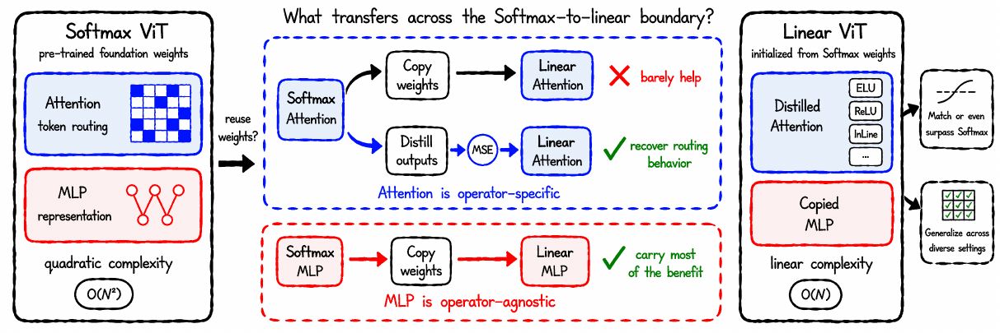
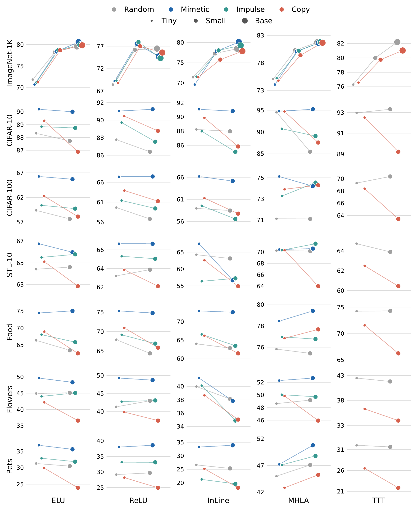
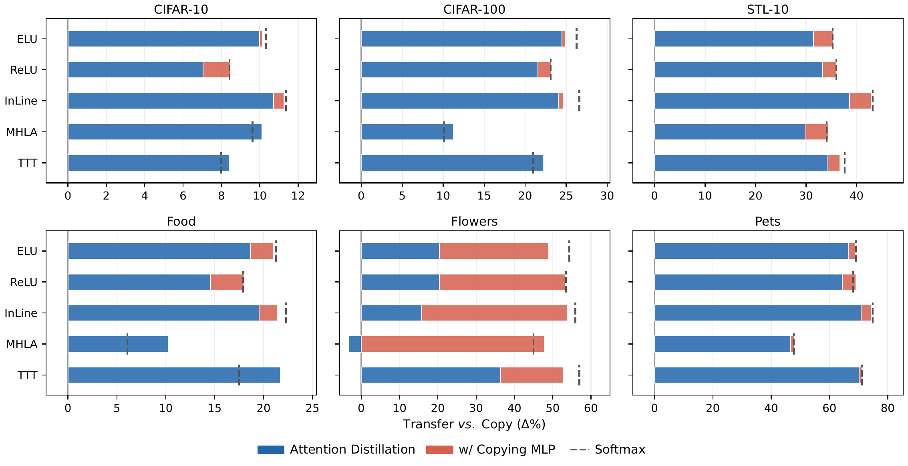
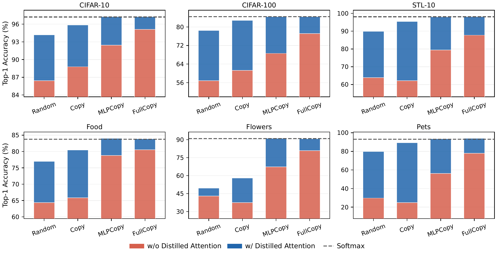
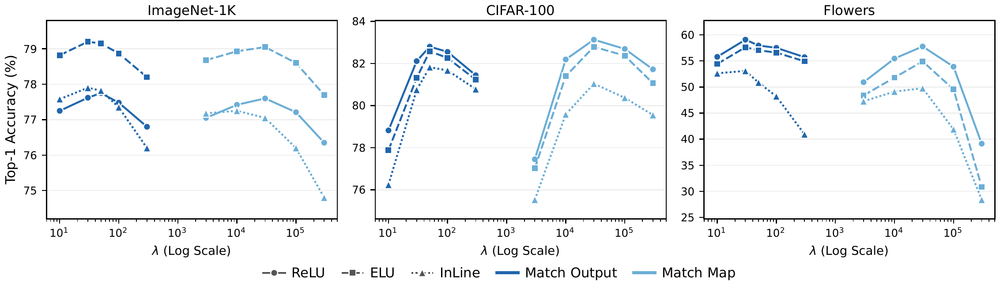
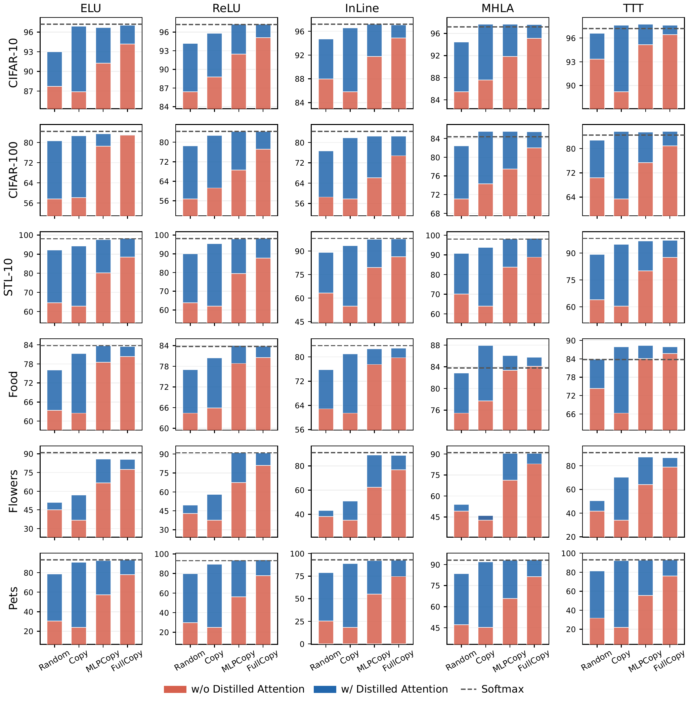
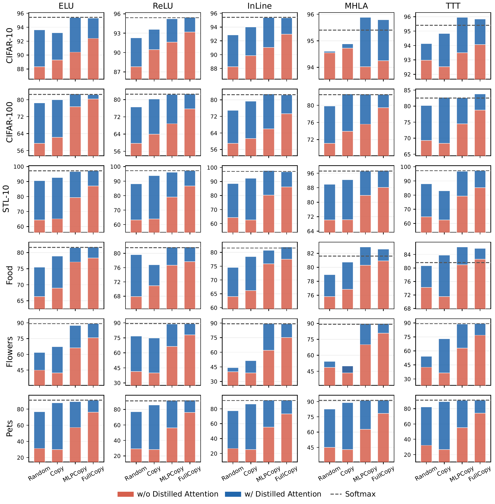

Linear Vision Transformers (ViTs) are designed to replace the attention in Softmax ViTs with the linear-complexity attention operator for more efficient token routing, but they require from-scratch pre-training and typically underperform the original Softmax version. How to initialize linear ViTs both efficiently and effectively still remains unclear. In this work, we explicitly ask: given that most foundation ViTs are built on the mainstream Softmax attention, can linear ViTs benefit from their pre-trained weights? Recent works on Attention Transfer show that attention is the effective transferable component between Softmax ViTs, suggesting attention alone suffices for such reuse. However, we find the opposite for Softmax-to-linear transfer. The attention weights are operator-specific: copying them barely helps, and is sometimes even worse than random initialization. Instead, the attention's token routing behavior can be recovered through distillation with a proper loss design, letting linear ViTs reduce the gap and even match Softmax ones. In contrast, the MLP weights, which carry the learned representation, are operator-agnostic: they can be transferred by simple direct copying, which already carries most of the benefit of the pre-trained weights. Thus, copying MLPs can serve as an effective foundation for Softmax-to-linear transfer: paired with the distilled attention, linear ViTs eventually close the remaining gap and even surpass Softmax ones. These findings hold consistently across various linear ViT variants, different model sizes, and diverse datasets. We hope this study deepens the understanding of reusing pre-trained weights across attention operators: copy what stays the same and distill what differs, to recover the benefit across the Softmax-to-linear boundary.
Softmax Attention. Given the queries Q, keys K, and values V at block ℓ, a Softmax ViT routes tokens through the attention function:
which computes an attention map at a quadratic O(N2) cost in the number of tokens N.
Linear Attention. Linear ViTs replace this Softmax operator with a linear-complexity alternative, in its standard form via a kernel function φ(·) that reorders the computation as:
The computational cost is therefore reduced to O(N).
Model Zoo. We study five representative linear ViT variants: ELU and ReLU, InLine, MHLA, and TTT. The first three variants are drop-in linear operators whose weight shapes exactly match the Softmax attention, while MHLA and TTT introduce additional components.
Transfer Protocol. We instantiate the five linear ViT variants across Tiny, Small, and Base sizes, all with the DeiT pre-trained weights of the corresponding model size as the transfer source. We evaluate Tiny and Small linear ViTs on six transfer datasets: CIFAR-10, CIFAR-100, STL-10, Food, Flowers, and Pets. We additionally evaluate all three sizes on ImageNet-1K.
Reference Baselines. Random baseline defines the from-scratch reference: one transfer is considered effective only if it improves over training from scratch. Softmax baseline defines the recovery target: the performance of the pre-trained Softmax ViT of the same model size on the same task.
Attention-Only Transfer. We first evaluate the strategy motivated by Attention Transfer between Softmax ViTs (Li et al., 2024; Qin et al., 2026): transferring only the attention. Copy loads the pre-trained Softmax attention projection weights into every block of the linear ViT, while leaving all other components randomly initialized. Mimetic and Impulse are two analytical initializations that construct attention weights from structural priors without using any pre-trained source. If the pre-trained Softmax attention alone suffices to preserve model performance across the Softmax-to-linear boundary, Copy should provide a clear advantage over all three alternatives.

Main Results. Across all the experiments, simply copying the Softmax weights into the linear operator never stands out as the strongest initialization. First, Mimetic, built without ever using any pre-trained source, systematically outperforms Copy. Second, even against Random, Copy yields no consistent gain. Third, Copy degrades performance by large margins compared to Random; this drop is consistent for TTT and also appears for other linear ViTs on datasets such as Pets and Flowers.
Model Size Robustness. As shown in Figure 2, the qualitative failure pattern holds consistently at all the tested sizes: within each plot, the attention-only Copy remains at or near the Random-initialization tier.
Pre-trained Weights Robustness. Table 1 reports the attention-only transfer with the Softmax weights from other well-known pre-training algorithms, including DINO, MoCov3, iBOT, and MAE. The same trend appears for all weights: copying can shift the performance only marginally, but can never turn into a reliable advantage over Random.
Out-of-Distribution Robustness. Table 2 further tests the transferred models on four ImageNet-1K distribution-shift benchmarks, where Copy merely preserves its marginal in-distribution difference from Random and gains no additional robustness.
| ELU | ReLU | MHLA | TTT | |
|---|---|---|---|---|
| Random | 79.6 | 76.5 | 81.8 | 82.2 |
| DeiT | 79.8 +0.2 | 75.6 −0.9 | 81.7 −0.1 | 81.0 −1.2 |
| DINO | 80.2 +0.6 | 75.2 −1.3 | 81.6 −0.2 | 80.6 −1.6 |
| MoCov3 | 79.9 +0.3 | 75.7 −0.8 | 81.7 −0.1 | 81.1 −1.1 |
| iBOT | 80.3 +0.7 | 75.3 −1.2 | 81.8 +0.0 | 80.7 −1.5 |
| MAE | 80.4 +0.8 | 76.0 −0.5 | 82.0 +0.2 | 81.4 −0.8 |
| ELU | TTT | ||||
|---|---|---|---|---|---|
| Random | Copy | Random | Copy | Softmax | |
| IN-A | 18.1 | 19.1 +1.0 | 24.1 | 23.7 −0.4 | 29.2 |
| IN-R | 38.9 | 39.6 +0.7 | 42.3 | 42.2 −0.1 | 45.8 |
| IN-S | 27.2 | 27.8 +0.6 | 30.0 | 29.9 −0.1 | 33.4 |
| IN-V2 | 66.8 | 67.2 +0.4 | 69.3 | 69.1 −0.2 | 72.4 |
We hypothesize that the token routing behavior encoded in the Softmax attention can be transferred as behavior instead of as weights. To test this, we distill from a frozen pre-trained Softmax teacher during downstream training: an additional distillation loss aligns the attention behavior between the student and the teacher at every block. For Softmax-to-linear transfer, given the differences among linear operators and the resulting operator-specific attention maps, with some operators never materializing a map at all, we deliberately place the loss between the attention outputs.

Compared to Copy, attention distillation closes most of the gap to the Softmax recovery target for every linear operator, and can even reach this target for MHLA and TTT on some datasets. One exception is the fine-grained Flowers, where attention distillation alone leaves a larger gap.
We decompose the transfer at the component level by selectively initializing the attention and the MLP blocks. We define two more weight-initialization settings: MLPCopy, which directly copies the MLP blocks from the pre-trained Softmax weights, while leaving all attention-related components randomly initialized; and FullCopy, which copies all pre-trained Softmax weights.

Random and Copy achieve comparable accuracy across datasets. Compared to both, MLPCopy rises far above on all datasets; while FullCopy yields further consistent gains over MLPCopy by additionally copying the attention. Therefore, the MLP blocks are operator-agnostic: simply copying them already carries most of the benefit of the pre-trained weights.
We next ask whether the two transfer methods can be paired to reach the Softmax recovery target more effectively. Although distilled attention brings significant gains in Figure 3, recovery to the Softmax target is still not consistent across datasets and linear operators. Combining the copied MLPs can provide consistent further gains wherever the target is not yet reached. Although all four weight-initialization settings shown in Figure 4 yield accuracy below the Softmax target, distilling the attention lifts every one of them, bringing MLPCopy and FullCopy to match the Softmax level. MLPCopy w/ Distill lands close to FullCopy w/ Distill, showing that once the token routing behavior is distilled, the copied attention weights become nearly redundant.
We further examine the loss-placement choice by sweeping the distillation loss weight λ separately for output matching and map matching across datasets of different scales.

For ReLU and ELU, whose attention maps are proper distributions, map matching and output matching yield comparable peak recovery. However, for InLine, whose map is a signed quasi-distribution, map matching falls consistently behind the output matching. Therefore, a more general design for Softmax-to-linear attention distillation should match the routing behavior at the operator-agnostic attention output rather than the operator-specific attention maps. The output-matching peak is stable in λ: accuracy varies within a broad plateau around the peak; we thus adopt λ = 50 as the default distillation loss weight.
We verify the generalizability of these findings with comprehensive evaluations on various linear ViTs and more model sizes.

The patterns hold consistently for every operator: Copy remains near Random, while MLPCopy alone lifts every operator far above Random on every dataset and FullCopy yields further consistent gains. MLPCopy w/ Distill lands close to FullCopy w/ Distill on every operator and dataset, with the final recipe eventually matching or even surpassing the Softmax recovery target on most datasets.

The patterns hold consistently for every operator at the smaller size as well, with smaller margins.
Relation to Linearization Methods. Our work is a controlled empirical study of initialization of linear ViTs: we explore the reuse of pre-trained Softmax weights by factorizing them at the component level, test whether each component can be transferred as weights or as behavior, and validate our findings under fixed training recipes on various downstream tasks across five linear attention operators. We do not claim to propose a new linearization method, and we do not claim to improve upon the methods below on their own benchmarks:
Relation to Attention Transfer. Attention Transfer (Li et al., 2024; Qin et al., 2026) in vision studies whether transferring only the attention from a pre-trained Softmax ViT to a Softmax student with the same architecture can recover the original model’s performance. Our Copy setting provides a different operation: the copied pre-trained attention projection weights serve only as an initialization, and every parameter, including the copied ones, is trained jointly on downstream tasks. Attention Transfer asks whether the attention alone suffices to transfer a Softmax ViT, while we ask whether the Softmax attention weights can initialize a linear attention operator. The failure of Copy is therefore a finding on weight-level initialization across the operator boundary, rather than a contradiction of Attention Transfer within the Softmax family.
@article{qin2026copy,
title = {Copy the Same, Distill the Difference:
Initializing Linear Vision Transformers},
author = {Qin, Huaiyuan and Yang, Muli and Goenawan, Gabriel James and
Huang, Shiqi and Chong, Min Kass and Wiratama, Wahyu and
Hu, Peng and Gong, Chen and Liu, Wu and Peng, Xi and
Ho, Chun Jian and Zhu, Hongyuan},
journal = {arXiv preprint arXiv:2609.35745},
year = {2026}
}This page is adapted from the ECHO project page, itself built on the Nerfies template.